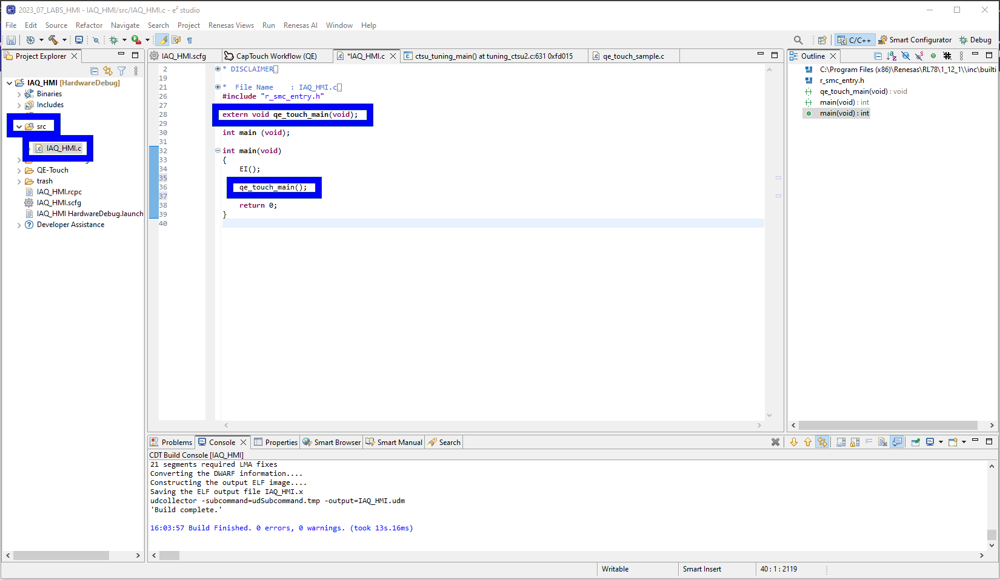
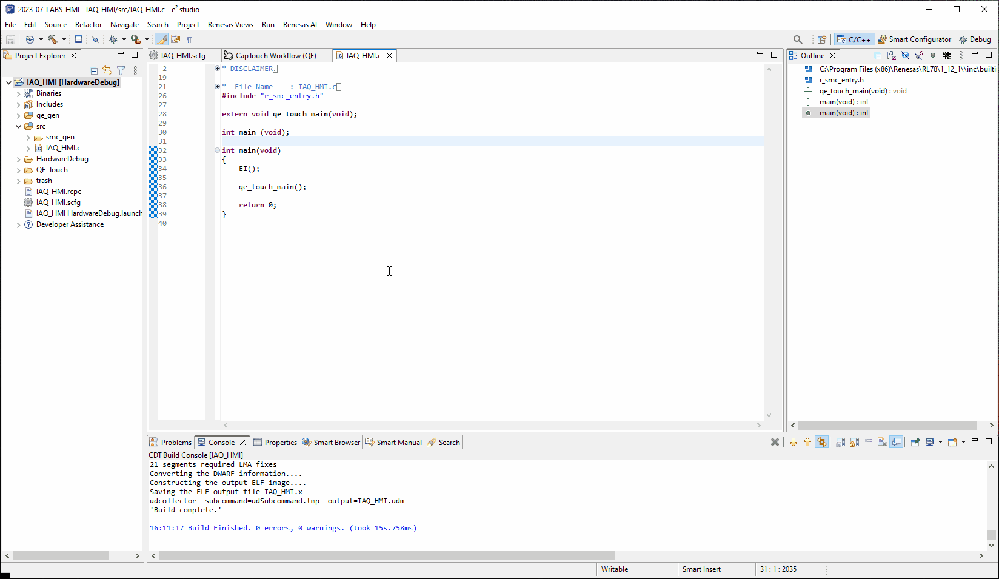
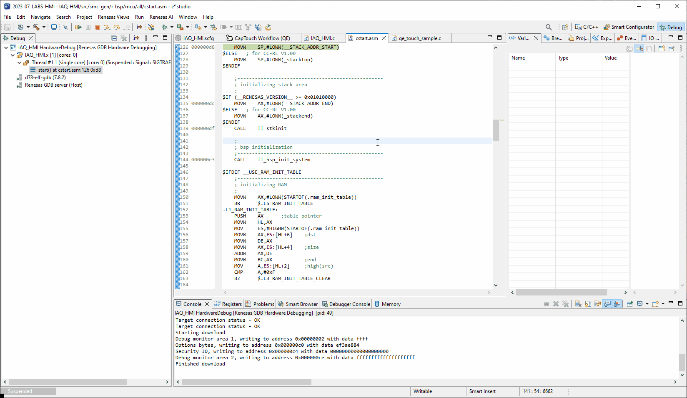
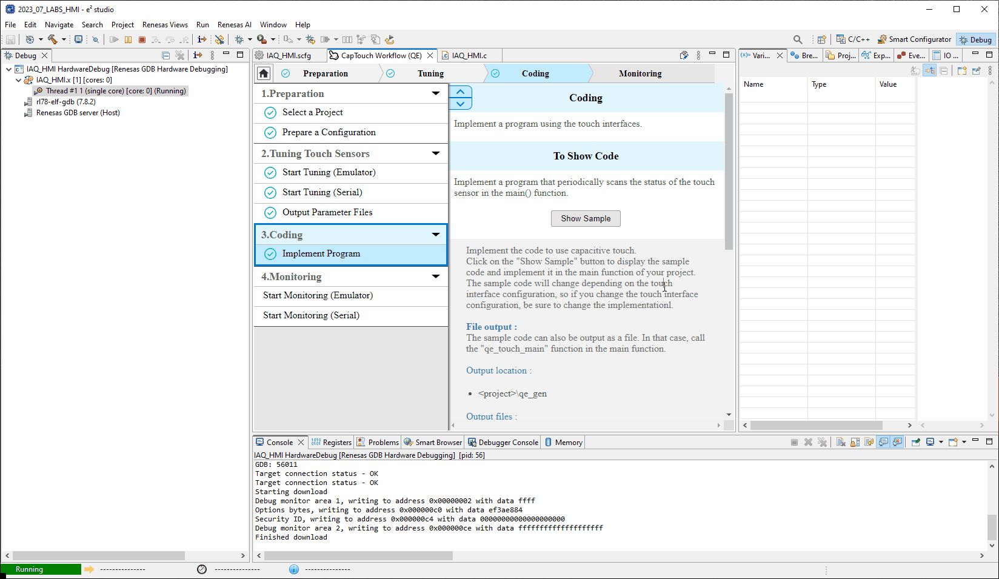

Here we will guide you through debugging this labs project and will provide details on how to verify the working of the project.
5.1 Edit the source
First we need to open the main source file, located:
[Project] → src → <project_name>.c
Extern a declaration to the QE generated sample application and make a call to the application.
extern void qe_touch_main(void);qe_touch_main();This is shown below.
Second lets add some code which illuminates the on-board LED when a proximity event is detected.
Copy the code below and copy it into the file we generated earlier located at:
[Project] → qe_gen → qe_touch_sample.c
The code should go at line 67 where the TODO: statement exists.
CCS0 = (button_status > 0UL) ? 2U : 0U;The code above toggle the current controlled IO registers to sink 5mA producing a magenta LED.
Code insertion shown below:
5.2 Build the project
To build the project please [Right-Click] the project and click Build Project.

5.3 Hardware
Before debugging the project, please ensure headers are fitted to the header H1 in positions 1-2
(VBATT-VDD) & 4-5 (VDD_RL78 - VDD).
Finally connect the E2-Lite - the user does not need to connect batteries for this lab as we will supply
the board via the debugger.

5.4 Debugging the project
To start a debug session please select the project by clicking on it and click the debug icon along the menu bar.
Finally Click the run icon, first it will run to main, click the run icon again and the project will start running.
5.5 Trigger the LED [optional]
Now as your hand approaches the proximity electrode the LED should light up.
When the hand is retracted the LED should then turn off.
5.6 Start Monitoring (Emulator)
Now onto the second major function of the QE tools.
The monitoring function allows us to configure the middleware in many ways - the following steps will show
us a plethora of those ways.
First Navigate back to the CapTouch Workflow, either by the tab or using the
Renesas Views → Renesas QE → CapTouch Workflow (QE)
method outlined earlier.
5.7 Enable Monitoring
Navigate to Start Monitoring (Emulator) within 4.Monitoring and select Show Views
Now perform the following (you may need to expand the windows as shown in the .gif):
- In the CapTouch Board Monitor (QE) view select Enable Monitoring
- In the CapTouch Status Chart (QE) view select Sync a selection
- In the CapTouch Parameters (QE) view select Sync a selection
5.8 Change the threshold
5.9 Change the positive/negative noise filter cycle counts
5.10 Change the drift correction
5.11 Change the long touch cancel
5.12 Output parameters file
5.13 Summary